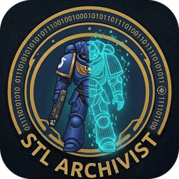

StlArchivist
Open a library on this computer, or connect to a server.
This computer
Starts a library server for this window only. Close the desktop app first if it has the same library open.

Open a library on this computer, or connect to a server.
Starts a library server for this window only. Close the desktop app first if it has the same library open.